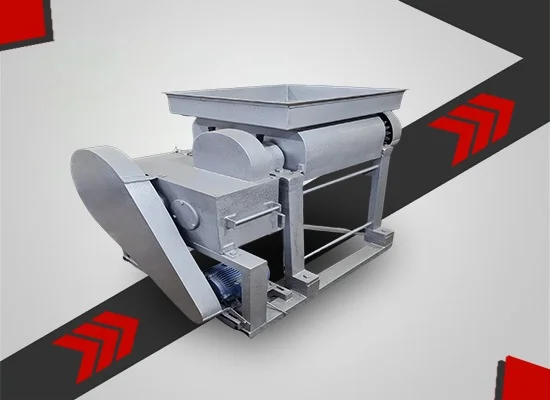

Best Dhoop Crushing Machine Manufacturer in Delhi for High Quality Production
Imagine this — you have mixed all your dhoop raw materials perfectly. Wood powder, charcoal, herbs, gum, and oils are all blended together. But when you try to make sticks or cones, the dough feels lumpy, uneven, and full of small hard pieces. Your sticks break easily, the surface looks rough, and customers complain about quality.
What went wrong? The answer is simple — your mixture needs proper crushing before it can be shaped into perfect dhoop products.
This is where a trusted Dhoop Crushing Machine Manufacturer plays a big role. A good crushing machine breaks down all the lumps, removes hard pieces, and gives you a smooth, even mixture that is ready to be shaped into sticks, cones, or cups.
If you live in or near Delhi, you have a strong advantage. A reliable Dhoop Crushing Machine Manufacturer in Delhi offers strong machines, fair prices, fast delivery, and quick after-sales service. Whether you need a small unit or a heavy Wet Dhoop Crushing Machine Manufacturer for factory-scale work, this guide will help you choose the best one.
Let's make things simple and clear.

A Dhoop Crushing Machine breaks down mixed dhoop raw materials into a smooth, lump-free paste that is ready for shaping into sticks, cones, or cups. V.S. Engineers — a trusted Dhoop Crushing Machine Manufacturers since 1985 — offers crushers from 1200 kg to 8000 kg capacity per 8-hour shift. As a top Wet Dhoop Crushing Machine Manufacturers, we provide free demo, warranty, custom sizes, and full after-sales support.
What Is a Dhoop Crushing Machine?
A Dhoop Crushing Machine is a heavy-duty industrial machine that crushes mixed dhoop raw materials into a fine, smooth, and even paste. After mixing, the raw material often contains small lumps, hard particles, or uneven texture. The crushing machine removes all these imperfections to prepare a high-quality paste.
Without a good crushing machine, your dhoop sticks or cones may have a rough surface, poor finish, and uneven burning quality.
A quality machine from a trusted manufacturer performs this task within minutes while handling hundreds of kilograms of production every shift.
About V.S. Engineers — 35+ Years of Trusted Manufacturing
V.S. Engineers started in 1985 in New Delhi with one clear vision — to build dhoop and incense machinery that lasts for decades. Today, after more than 35 years, our machines run successfully in dhoop factories, agarbatti units, and incense brands across India and overseas.
Our manufacturing unit is located in DSIIDC Industrial Area, Bawana, New Delhi. Every machine is designed, built, and tested in-house by our experienced engineering team.
As a leading Dhoop Crushing Machine Manufacturer in Delhi, we focus on strong build quality, smooth performance, and long-term after-sales service.
Our Promise: Crushed mixed materials of dhoop, ready for shaping.
Why Crushing Is Important in Dhoop Making
Many beginners think mixing is enough, but crushing plays an equally important role in producing premium-quality dhoop.
- Breaks down hard powder lumps.
- Removes small wood or charcoal particles.
- Makes the paste smooth and even.
- Improves stick surface finish.
- Makes shaping easier and faster.
- Reduces breakage in finished sticks.
- Improves burning quality.
- Helps fragrance spread evenly in every stick.
Dhoop Crushing Machine — Technical Specifications
We manufacture four standard models suitable for different production capacities.
| Model | Capacity | Per Day | Power | Roller Size | Machine Size |
|---|---|---|---|---|---|
| 1 | 1200 kg | 8 hrs | 3 HP | 10 × 12 | 46 × 30 × 30 |
| 2 | 2400 kg | 8 hrs | 5 HP | 12 × 18 | 42 × 42 × 42 |
| 3 | 3600 kg | 8 hrs | 5 HP | 12 × 24 | 42 × 50 × 42 |
| 4 | 8000 kg | 8 hrs | 7.5 HP | 12 × 30 | 42 × 56 × 42 |
Types of Dhoop Crushing Machines
1. Wet Dhoop Crushing Machine
This machine crushes wet dhoop dough into a smooth and lump-free paste, making it ideal for sticks, cones, and cups.
2. Dry Dhoop Crushing Machine
This model is suitable for crushing dry powder lumps and masala mixtures.
Our machines are designed to handle both wet and dry materials efficiently.
Wet vs Dry Dhoop Crushing Machine
| Feature | Wet Machine | Dry Machine |
|---|---|---|
| Raw Material | Wet Dough | Dry Powder |
| Output | Smooth Paste | Fine Powder |
| Best For | Dhoop Sticks & Cones | Masala Mix |
| Cleaning | Needs More Care | Easy |
| Market Demand | Very High | Medium |
Key Features of Our Dhoop Crushing Machine
- Heavy-duty mild steel body for long machine life.
- Strong crushing rollers made from hardened steel.
- Smooth crushing operation with no material jamming.
- Available in 3 HP, 5 HP and 7.5 HP motor options.
- Production capacity up to 8000 kg per shift.
- Compact design suitable for small and large factories.
- Easy loading and discharge system.
- Low maintenance and long bearing life.
- Energy-efficient motor for lower electricity consumption.
- Safety guards on all moving parts.
- Suitable for wet as well as dry dhoop materials.
- Designed for continuous industrial production.
Benefits of Using Our Crushing Machine
When the paste becomes perfectly smooth, the quality of the final dhoop product also improves significantly.
- Smooth and lump-free paste in every batch.
- Premium surface finish on dhoop sticks.
- One machine replaces the work of multiple labourers.
- Faster production with higher output.
- Less raw material wastage.
- Better burning quality.
- Higher customer satisfaction.
- Quick return on investment.
- Long machine life.
- Very easy to operate.
Applications of Our Dhoop Crushing Machine
- Wet dhoop paste preparation.
- Dhoop stick raw material processing.
- Dhoop cone production.
- Sambrani cup manufacturing.
- Agarbatti masala crushing.
- Hawan samagri preparation.
- Cow dung dhoop production.
- Herbal incense manufacturing.
- Export-quality incense production.
Why Choose V.S. Engineers?
35+ Years of Experience
Manufacturing reliable dhoop machinery since 1985.
Trusted by Leading Brands
Hundreds of businesses across India rely on our machines.
Complete Production Setup
From mixing to crushing, extrusion, cutting and drying machines under one roof.
Direct Manufacturer Pricing
Factory-direct prices without dealers or middlemen.
Fast Service Support
Quick spare parts and technical support from our Delhi manufacturing unit.
Lifetime Assistance
Installation, training, technical guidance and spare parts support.
Buying Guide: How to Choose the Right Crushing Machine
Before buying from any Dhoop Crushing Machine Manufacturer, keep these important points in mind:
- Select the machine according to your daily production target.
- Choose the correct motor power (3 HP, 5 HP or 7.5 HP).
- Confirm that the machine supports wet or dry material as required.
- Check the body material and roller quality.
- Always ask for a written warranty.
- Ensure spare parts and service are available.
- Watch a live machine demonstration before purchase.
- Always purchase with a GST invoice.
- Confirm delivery time in writing.
A trusted manufacturer like V.S. Engineers always provides live demonstrations and complete customer support.
Expert Tips for Buyers
- Visit the manufacturing factory before purchasing.
- Ask for customer references.
- Read online reviews and ratings.
- Test the machine using your own raw material.
- Measure actual production output during the demo.
- Get warranty and delivery commitments in writing.
- Confirm spare parts availability.
- Compare different manufacturers before making a final decision.
Common Mistakes to Avoid
- Buying only because of low price.
- Ignoring after-sales service.
- Selecting the wrong production capacity.
- Skipping a live machine demonstration.
- Not taking a written agreement.
- Trusting only sales promises.
- Ignoring power supply requirements.
- Not testing with your own material.
Quality & Manufacturing Standards
Every Dhoop Crushing Machine is manufactured under strict quality control procedures.
- Premium mild steel construction.
- Branded motors with overload protection.
- Industrial-grade bearings and gears.
- Hardened crushing rollers.
- Powder-coated rust-resistant finish.
- Complete load testing before dispatch.
- Final inspection for vibration, noise and performance.
Frequently Asked Questions
Q1. Who is the best Dhoop Crushing Machine Manufacturer in Delhi?
V.S. Engineers has been manufacturing crushing machines since 1985 with trusted quality and service.
Q2. What capacities are available?
1200 kg, 2400 kg, 3600 kg and 8000 kg per shift.
Q3. What motor options are available?
3 HP, 5 HP and 7.5 HP models are available.
Q4. Can it process wet and dry materials?
Yes, the machine can efficiently process both wet and dry dhoop materials.
Q5. Do you provide installation?
Yes. Installation and operator training are available.
Q6. Can I order a custom-built machine?
Yes, machines can be customized according to production requirements.
Q7. Do you deliver across India?
Yes. We supply machines throughout India and export internationally.
Conclusion
Choosing the right Dhoop Crushing Machine Manufacturer improves production quality, reduces wastage and increases manufacturing efficiency.
V.S. Engineers provides durable machines, reliable after-sales support and competitive pricing for every production scale.
Ready to Upgrade Your Dhoop Production?
Contact V.S. Engineers today for a free machine demonstration, latest quotation and expert consultation.